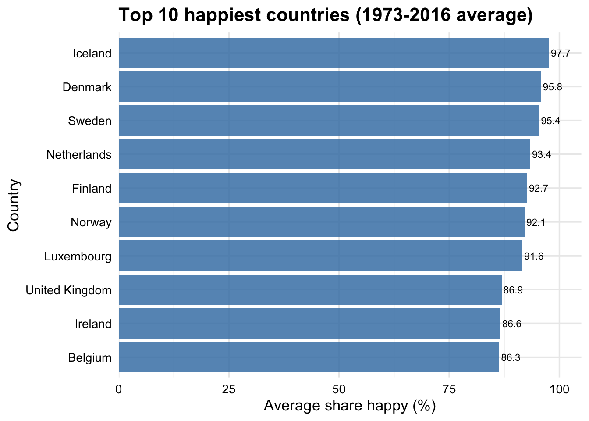
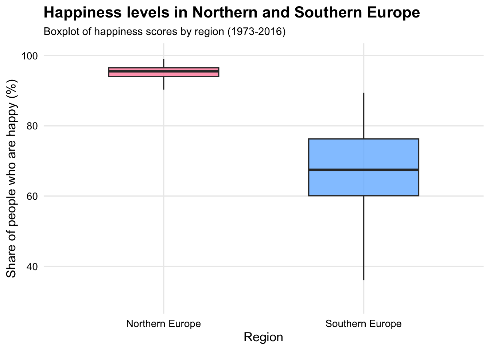

With the development of society, people are paying more and more attention to mental health. The measurement of happiness is a very important part of the assessment of psychological states. In this project I look at how happiness has changed over time in Europe. I use survey data from the Eurobarometer study, which asks people in many European countries how happy they feel. The data have been processed and shared by Our World in Data, so it is easy to compare countries and years in one dataset.
I chose this topic because happiness is an important part of measuring the quality of life, but people often do not know how it changes over time or what differences exist among different countries. Some news reports or information on the Internet may mention that a certain country has a high level of happiness while another has a low level, but they often do not provide clear data. I wanted to make some simple visualisations that make these patterns easier to see.
The project also gave me a chance to practise the skills from this module. I use tidyverse functions to clean the data, create summary statistics, and draw different kinds of graphs. All of the code and data are kept together in one R project so that the results can be reproduced.
Research questions
This project focuses on three main questions:
1. How has reported happiness changed over time in a selection of European countries? Here I focus on several well-known countries (such as Sweden, Germany and the United Kingdom) and look at long-term trends from 1973 to 2016.
2. Which countries have the highest average level of reported happiness across the whole period?
I calculate an average happiness score for each country and then look at the top ten.
3. Are there systematic differences in happiness between Northern and Southern Europe?
I group countries into “Northern Europe” and “Southern Europe” and compare the distribution of happiness scores between these two regions.
Data Origins
The data used in this project comes from the Eurobarometer survey. Eurobarometer is a long-running public opinion survey carried out for the European Commission. Every year, people in many European countries are asked questions about their lives, including how happy they feel.
The version of the dataset used here was cleaned and republished by Our World in Data (OWID). OWID combines the survey responses, standardises the variable names, and makes the data available as downloadable CSV files. This makes it possible to compare countries and time periods using one dataset.
The dataset used in this project contains the following key variables: Codebook (main variables)
Variable
Meaning
Entity
The name of the country
Code
Country’s short code (ISO code)
Year
The year when the survey was collected
share_happy
Percentage of people who reported being “happy”
The dataset covers the years 1973 to 2016, but not every country has data for every year. Because the dataset comes from survey responses, some values are missing. In this project, rows with missing values in the share_happy column were removed.
Below is a preview of the raw data loaded into R:
# Show raw data to illustrate structurehead(happy_raw)
# A tibble: 6 × 4
Entity Code Year `Share of people who are happy (Eurobarometer 2017)`
<chr> <chr> <dbl> <dbl>
1 Albania ALB 2014 58.7
2 Albania ALB 2015 62.0
3 Albania ALB 2016 59.1
4 Austria AUT 1996 93.2
5 Austria AUT 1997 83.7
6 Austria AUT 1998 83.4
Data Preparation
Before making the visualisations, some basic cleaning steps were needed. The raw dataset contains a long variable name for happiness, so I first renamed it to a shorter and clearer name: share_happy. I also removed rows where the happiness value was missing, because these rows cannot be used in graphs or summary statistics.
In addition, I carried out some simple checks to make sure the data looked reasonable. Below are the main steps:
1. Renaming variables
The original happiness variable had a long name. Renaming it makes the code easier to read.
2. Removing missing values
Some country–year pairs do not have happiness data. These rows were removed so they do not distort the analysis.
3. Checking data ranges (sanity checks)
To make sure the values made sense, I checked: - Year range: The dataset should cover 1973–2016.
- Happiness range: All values in share_happy should be between 0 and 100.
- Number of countries: There should be many different countries represented.
All of these checks showed that the data looked consistent with the information given by Eurobarometer and Our World in Data.
4. Preview of the cleaned data
Below is a preview of the cleaned dataset:
# Rename the long happiness column to a simpler namehappy_clean <- happy_raw %>%rename(share_happy ='Share of people who are happy (Eurobarometer 2017)' ) %>%drop_na(share_happy) # Remove rows with missing values#Display the cleaned datahead(happy_clean)
# A tibble: 6 × 4
Entity Code Year share_happy
<chr> <chr> <dbl> <dbl>
1 Albania ALB 2014 58.7
2 Albania ALB 2015 62.0
3 Albania ALB 2016 59.1
4 Austria AUT 1996 93.2
5 Austria AUT 1997 83.7
6 Austria AUT 1998 83.4
Plot 1: Trends in happiness over time
Interpretation of Plot 1
This graph shows how the share of people who reported being happy changed over time in seven European countries. I chose a small group of well-known countries so that the lines stay clear and easy to read. The data go from 1973 to 2016, so the plot gives a long-term view of happiness trends.
In most countries, the lines move up and down over the years instead of showing one simple pattern. For example, Sweden and Denmark stay at a high level almost the whole time, while countries like Spain and Ireland start lower but rise at some points. Germany and the United Kingdom show more variation, especially during the 1980s and 1990s.
I also added a LOESS smooth line (the dashed black line) to show the general trend across all seven countries. This line helps to see the overall direction when the individual lines are a bit noisy. The smooth line suggests that, on average, happiness in Europe stayed fairly stable over the decades, with some small increases after the early 2000s.
Overall, this plot helps answer the first research question by showing that happiness changes over time in different ways for different countries, but the general pattern across Europe is quite steady.
# Select a set of focus countriescountries_focus <-c("Sweden", "Finland", "Ireland", "United Kingdom", "Germany", "France", "Spain")# Filter the dataset to include only these countrieshappy_focus <- happy_clean %>%filter(Entity %in% countries_focus)#Plot line chart of happiness over timeggplot (happy_focus, aes(x = Year, y = share_happy, color = Entity)) +geom_line(linewidth =1, alpha =0.7) +geom_point(size =0.3, alpha =0.7) +#This shows the combined smoothed trend across all countries.geom_smooth(aes(group =1),method ="loess",se =FALSE,linewidth =1.2,color ="black",linetype ="dashed") +scale_color_manual(values =c("Sweden"="#4A90E2", "Finland"="#FF8DAA", "Ireland"="#50C878","United Kingdom"="#BD10E0", "Germany"="#F5A623","France"="#4ECDC4","Spain"="#C44D58" )) +#Improve readability of the x-axis scalescale_x_continuous(breaks =seq(1970, 2015, 10)) +labs(title ="Life satisfaction trends in selected European countries (1973–2016)", x ="Year", y ="Share of people who are happy (%)", color ="Country" ) +theme_minimal(base_size =13) +theme(plot.title =element_text(face ="bold", size =13), axis.text =element_text(color ="black"), legend.position ="right" )
Plot 2: Average happiness across countries
Interpretation of Plot 2
This bar chart shows the ten countries with the highest average happiness across all the years in the dataset. I calculated the mean value for each country and then selected the top ten. Using a horizontal bar chart makes the names easy to read and helps compare the values quickly.
From the plot, we can see that the top countries are mostly in Northern or Western Europe. Denmark, the Netherlands and Ireland all have very high average scores. This matches common discussions about happiness in Europe, where countries in the north usually score well. The values are fairly close to each other, but the highest countries are still clearly above the rest.
This plot answers the second research question by showing which countries have been the happiest on average between 1973 and 2016. It also helps show that some differences between countries are quite stable when we look at long time periods.
#Calculate the mean happiness for each countryhappy_country_mean <- happy_clean %>%group_by(Entity) %>%summarise(mean_happy =mean(share_happy, na.rm =TRUE)) %>%arrange(desc(mean_happy))#Select the top 10 happiest countrieshappy_top10 <- happy_country_mean %>%slice_max(order_by = mean_happy, n =10)#Plot bar chartggplot(happy_top10, aes(x =reorder(Entity, mean_happy),y = mean_happy)) +geom_col(fill ="steelblue", alpha =0.85) +#Flip axes so country names are easier to readcoord_flip() +#Add value labels at the end of each bargeom_text(aes(label =round(mean_happy, 1)),hjust =-0.1,size =3) +#Keep y-axis within 0–100 and leave a bit of space for labelsscale_y_continuous(limits =c(0, 100),expand =expansion(mult =c(0, 0.05))) +labs(title ="Top 10 happiest countries (1973-2016 average)", x ="Country", y ="Average share happy (%)" ) +theme_minimal(base_size =13) +#Make the country labels darker for better readabilitytheme(plot.title =element_text(face ="bold", size =16), axis.text =element_text(color ="black"))

Plot 3: Northern vs Southern Europe
Interpretation of Plot 3
This boxplot compares the distribution of happiness levels in Northern Europe and Southern Europe. I grouped the countries into these two regions because this is a common way to describe cultural and economic differences within Europe. Using a boxplot is helpful here because it shows the spread of the values, not just the average.
From the plot, Northern Europe has higher happiness scores overall and also less variation. The box is higher on the scale and the median line is clearly above the median for Southern Europe. In contrast, the Southern Europe box is lower and shows more spread, which means the scores change more from year to year.
This plot answers the third research question by showing that there is a clear difference between the two regions. Northern European countries tend to report higher happiness levels across the whole period from 1973 to 2016, while Southern European countries show lower and more variable scores.
#Plot 3: Trends iin happiness by region (Northern vs Southern Europe)northern <-c("Sweden", "Finland", "Denmark", "Norway", "Iceland") southern <-c("Spain", "Italy", "Portugal", "Greece", "Cyprus")happy_region_box <- happy_clean %>%mutate(region =case_when( Entity %in% northern ~"Northern Europe", Entity %in% southern ~"Southern Europe",TRUE~NA_character_ ) ) %>%drop_na(region)#Plot trends with facet panelsggplot(happy_region_box, aes(x = region, y = share_happy, fill = region)) +geom_boxplot(width =0.55, alpha =0.8, outlier.shape =NA) +scale_fill_manual(values =c("Northern Europe"="#FF8DAA","Southern Europe"="#74B9FF")) +#Set Y-axis range to focus on relevant valuesscale_y_continuous(limits =c(30,100)) +labs(title ="Happiness levels in Northern and Southern Europe", subtitle ="Boxplot of happiness scores by region (1973-2016)", x ="Region", y ="Share of people who are happy (%)" ) +theme_minimal(base_size =13) +theme(legend.position ="none", plot.title =element_text(face ="bold", size =16),plot.subtitle =element_text(size =11), axis.text =element_text(color ="black"), panel.grid.minor =element_blank() )

Plot 4: Variation in happiness by country (standard deviation)
Interpretation of Plot 4
This graph shows how much happiness scores change inside each country by using the standard deviation. It helps us understand which countries are more stable over time and which ones experience larger swings in happiness.
To connect this graph with Plot 3, I used the same regional colours: pink for Northern Europe, blue for Southern Europe, grey for all other countries. This allows the reader to see whether the same patterns from Plot 3 also appear when we look at variation.
A clear pattern appears in the results. Most Southern European countries (in blue) have much higher levels of variation. Their lines extend further to the right, showing that their happiness levels changed a lot more from year to year. In contrast, Northern Europe (in pink) shows the lowest variation in the whole dataset. Iceland, Sweden, Norway, Denmark and Finland all appear at the bottom of the graph with very small standard deviations.
This pattern matches what we saw in Plot 3: Northern Europe is not only happier on average, but their happiness is also more stable. Southern Europe does not only start lower on average, but their scores fluctuate more strongly over time. Countries in the grey “Other” category sit mostly in the middle, showing moderate variation. This also fits our analysis, because these countries belong to many different regions that were not part of the comparison in Plot 3. By keeping them in grey, the graph remains readable and avoids distracting the reader from the main comparison. Overall, this graph supports the idea that regional differences in Europe are not only about average happiness, but also about how consistent happiness is over time. Northern Europe stands out as both the happiest and the most stable region in the dataset.
# Calculate standard deviation for each countryhappy_sd <- happy_clean %>%group_by(Entity) %>%summarise(sd_happy =sd(share_happy, na.rm =TRUE)) %>%arrange(desc(sd_happy))# Add region info to match Plot 3 colourshappy_sd <- happy_sd %>%mutate(region =case_when( Entity %in% northern ~"Northern Europe", Entity %in% southern ~"Southern Europe",TRUE~"Other" ) )# Define consistent colours (same as Plot 3)region_colours <-c("Northern Europe"="#FF8DAA", # pink"Southern Europe"="#74B9FF", # blue"Other"="grey80"# grey)# Plotggplot(happy_sd, aes(x =reorder(Entity, sd_happy),y = sd_happy,fill = region)) +geom_col(width =0.7) +coord_flip() +scale_fill_manual(values = region_colours) +labs(title ="Variation in happiness by country (standard deviation)",subtitle ="Northern and Southern Europe highlighted using the same colours as Plot 3",x ="Country",y ="Standard deviation of happiness (%)",fill ="Region" ) +theme_minimal(base_size =13) +theme(axis.text.y =element_text(size =7.5), # reduce crowdingaxis.title.y =element_text(size =11),plot.margin =margin(10, 40, 10, 10), # more right spacelegend.position ="right",plot.title =element_text(face ="bold", size =15),plot.subtitle =element_text(size =11, color ="grey30"),panel.grid.minor =element_blank() )
Summary
This project helped me understand how different types of visualisations can show different sides of the same dataset. By working with Eurobarometer happiness data from 1973 to 2016, I learned how data cleaning, grouping and plotting choices can change the patterns we see. Using four visualisations allowed me to look at happiness from several angles instead of relying on one summary statistic.
Across the results, a few clear themes appeared. The line plot showed that Northern European countries stay high and fairly steady over time, while Southern European countries move up and down more from year to year. The bar chart also showed a strong gap in average happiness levels, with Northern Europe again near the top. The boxplot supported this by showing that Southern Europe has a wider spread of scores, which suggests that the region is less stable overall.
The standard-deviation plot added an important extra perspective on these differences. It showed that Northern European countries not only have higher average happiness but also much lower variation, meaning their happiness levels remain stable across decades. In contrast, many Southern European countries have some of the highest standard deviations, confirming that their happiness scores fluctuate more strongly. Together, these four visualisations show that the North–South contrast is not only about average levels of happiness, but also about how consistent those levels are over time.
There were still some limitations. Some countries have missing years, which influences the long-term trends. The dataset is based on self-reports, so cultural differences in how people describe happiness may affect the results. This data is also up to 2016. Due to the impact of COVID-19 in the following years, it became difficult for many countries to collect data, so the dataset was terminated in this year.
If I continued this project, I would like to explore what factors explain these regional differences. Economic indicators, unemployment, or social inequality might help make sense of why some countries are always near the top. It would also be interesting to compare Europe with other continents or to look at shorter time windows to see how specific events affect happiness. These steps could give a deeper understanding of what shapes happiness beyond simple averages.